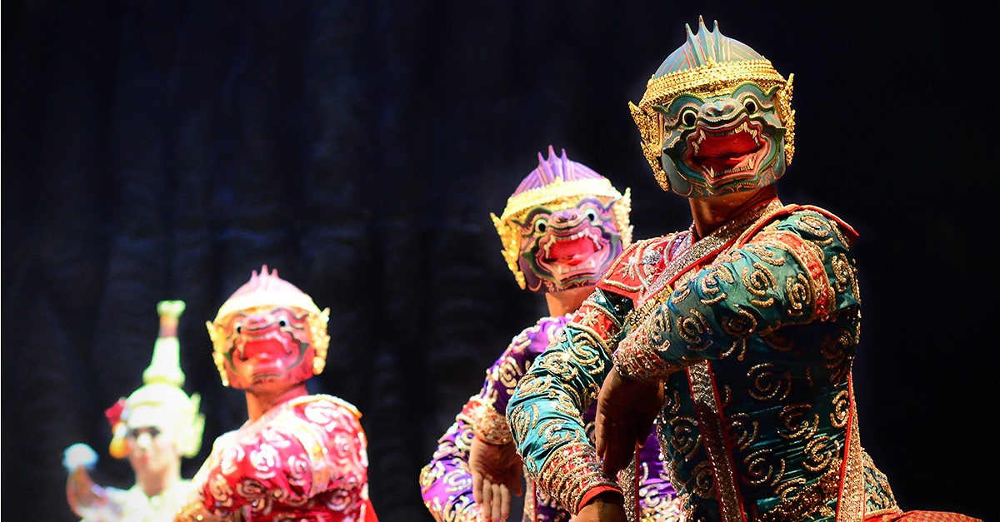
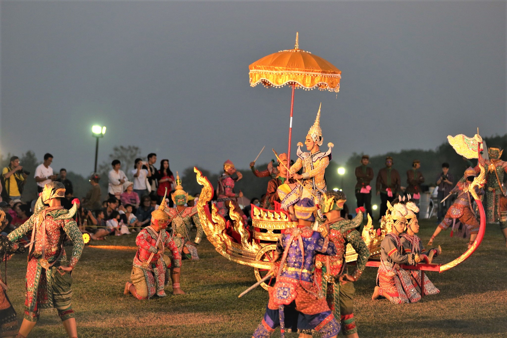
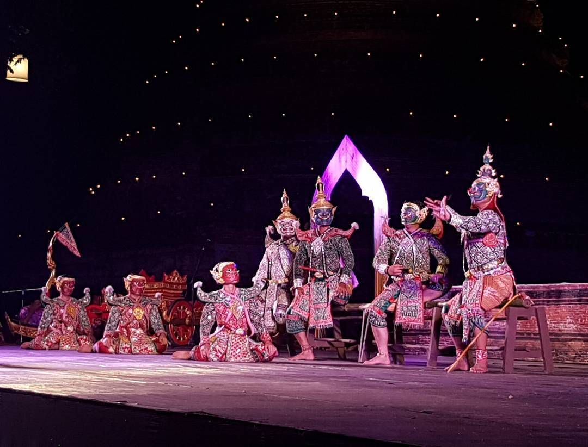
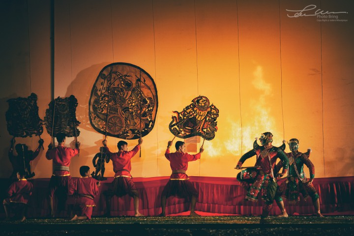
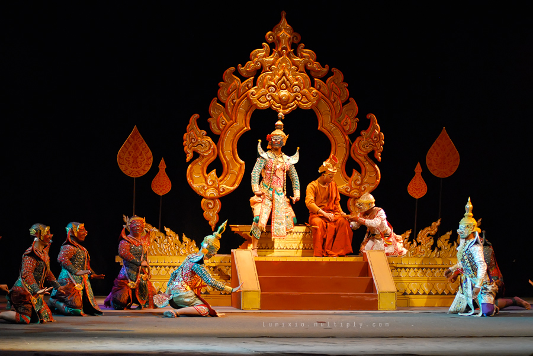
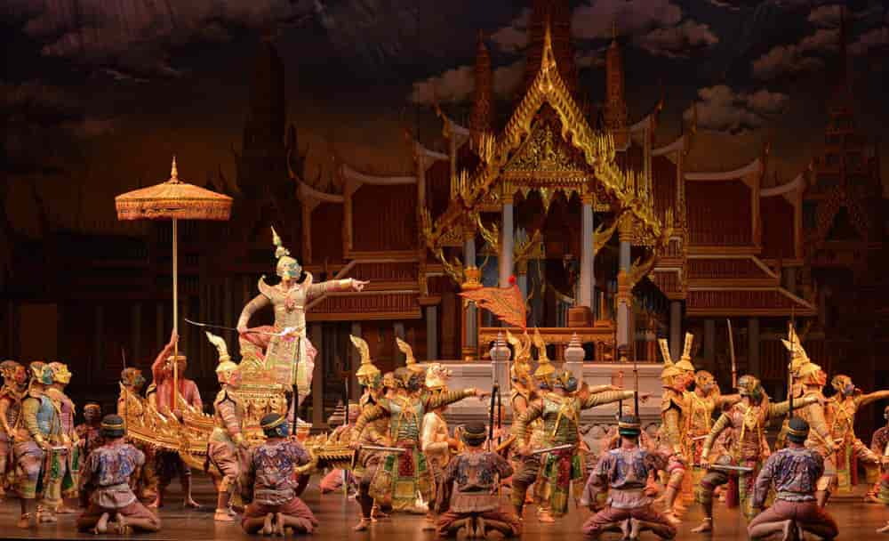

โขน (Khon)

เป็นนาฏศิลป์ชั้นสูงที่เก่าแก่ของไทย มีมานานตั้งแต่สมัยกรุงศรีอยุธยา ตามหลักฐานจากจดหมายเหตุของลา ลูแบร์ ราชทูตฝรั่งเศสสมัยสมเด็จพระนารายณ์มหาราช ได้กล่าวถึงการเล่นโขนว่า เป็นการเต้นออกท่าทางเข้ากับเสียงซอและเครื่องดนตรีอื่น ๆ ผู้เต้นสวมหน้ากากและถืออาวุธ
โขนเป็นที่รวมของ ศิลปะหลายแขนงคือ โขนนำวิธีเล่นและวิธีแต่งตัวบางอย่างมาจากการเล่นชักนาคดึกดำบรรพ์ โขนนำท่าต่อสู้โลดโผน ท่ารำท่าเต้นมาจากกระบี่กระบอง และโขนนำศิลปะการพากย์การเจรจา หน้าพาทย์เพลงดนตรี การแสดงโขนผู้แสดงสวมศีรษะคือหัวโขนปิดหน้าหมด
ยกเว้น เทวดา มนุษย์ และมเหสี ธิดาพระยายักษ์ มีต้นเสียงและลูกคู่ร้องบทให้และมีคนพากย์และเจรจาให้ด้วย เรื่องที่แสดงนิยมแสดงเรื่องรามเกียรติ์และอุณรุฑ ดนตรีที่ใช้ประกอบการแสดงโขนใช้วงปี่พาทย์
ประเภทของโขนแบ่งออกเป็น ๕ ประเภท คือ

คือ การเล่นโขนบนพื้นดิน ณ กลางสนาม ไม่ต้องสร้างโรงให้เล่น นิยมแสดงตอนยกทัพรบกัน โขนกลางแปลงได้วิวัฒนาการมาจากการเล่นชักนาคดึกดำบรรพ์ เรื่องกวนน้ำอมฤต เรื่องมีอยู่ว่า เทวดาและอสูรใคร่จะเป็นอมตะ
จึงไปทูลพระนารายณ์ พระนารายณ์จึงแนะนำให้กวนน้ำอมฤต โดยใช้เขามนทคิรีเป็นไม้กวน เอาพระยาวาสุกรีเป็นเชือกพันรอบเขา เทวดาชักทางหาง หมุนเขาไปมา พระยาวาสุกรีพ่นพิษออกมา พระนารายณ์เชิญให้
พระอิศวรดื่มพิษนั้นเสีย พระอิศวรจึงมีศอสีนิลเพราะพิษไหม้ ครั้นกวนต่อไป เขามนทคิรีทะลุลงไปใต้โลก พระนารายณ์จึงอวตารเป็นเต่าไปรองรับเขามนทคิรีไว้ ครั้นได้น้ำอมฤตแล้ว เทวดาและอสูรแย่งชิงน้ำอมฤตกันจนเกิดสงคราม
พระนารายณ์จึงนำน้ำอมฤตไปเสีย พวกอสูรไม่ได้ดื่มน้ำอมฤตก็ตายในที่รบเป็นอันมาก เทวดาจึงเป็นใหญ่ในสวรรค์ พระ นารายณ์เมื่อได้น้ำอมฤตไปแล้ว ก็แบ่งน้ำอมฤตให้เทวดาและอสูรดื่ม พระนารายณ์แปลงเป็นนางงาม
รินน้ำอมฤตให้เทวดา แต่รินน้ำธรรมดาให้อสูร ฝ่ายราหูเป็นพี่น้องกับพระอาทิตย์และพระจันทร์แต่ราหูเป็อสูร ราหู เห็นเทวดาสดชื่นแข็งแรงเมื่อได้ดื่มน้ำอมฤต แต่อสูรยังคงอ่อนเพลียอยู่ เห็นผิดสังเกต จึงแปลงเป็นเทวดาไปปะปนอยู่ในหมู่เทวดา
จึงพลอยได้ดื่มน้ำอมฤตด้วย พระอาทิตย์และพระจันทร์ จึงแอบบอกพระนารายณ์ พระนารายณ์โกรธมากที่ราหูตบตาพระองค์ จึงขว้างจักรไปตัดกลางตัวราหู ร่างกายท่อนบนได้รับน้ำอมฤตก็เป็นอมตะ แต่ร่างกายท่อนล่างตายไป ราหูจึงเป็นยักษ์มีกายครึ่งท่อน
ราหูโกรธและอาฆาตพระอาทิตย์และพระจันทร์มาก พบที่ไหนก็อมทันที เกิดเป็นราหูอมจันทร์หรือจันทรคราสและสุริยคราส ต่อมาเมื่อพระพุทธเจ้ามาเทศนาให้ราหูเลิกพยาบาทจองเวร ราหูจึงได้คลายพระอาทิตย์หรือพระจันทร์ออก
การเล่นชักนาคดึกดำบรรพ์ เล่นในพิธีอินทราภิเษก มีปรากฏในกฎมณเฑียรบาลสมัยกรุงศรีอยุธยา โขนกลาง แปลงนำวิธีการแสดงคือการจัดกระบวนทัพ การเต้นประกอบหน้าพาทย์ มาจากการเล่นชักนาคดึกดำบรรพ์ แต่เปลี่ยนมาเล่นเรื่องรามเกียรติ์
และเล่นตอนฝ่ายยักษ์และฝ่ายพระรามยกทัพรบกัน จึงมีการเต้นประกอบหน้าพาทย์ และอาจมีบทพาทย์และเจรจาบ้างแต่ไม่มีบทร้อง

เป็นการแสดงบนโรงมีหลังคา ไม่มีเตียงสำหรับตัวโขนนั่ง แต่มีราวพาดตามส่วนยาวของโรงตรงหน้าฉาก (ม่าน) มีช่องทางให้ผู้แสดงเดินได้รอบราวแทนเตียง มีการพากย์และเจรจา แต่ไม่มีการร้อง ปี่พาทย์บรรเลงเพลงหน้าพาทย์ มีปี่พาทย์ ๒ วง เพราะต้องบรรเลงมาก ตั้งหัวโรงท้ายโรง
จึงเรียกว่าวงหัวและวงท้าย หรือวงซ้ายและวงขวา วันก่อนแสดงโขนนั่งราวจะมีการโหมโรง และให้พวกโขนออกมากระทุ้งเส้าตามจังหวะเพลง พอ จบโหมโรงก็แสดงตอนพิราพออกเที่ยวป่า จับสัตว์กินเป็นอาหาร พระรามหลงเข้าสวนพวาทองของพราพ แล้วก็หยุดแสดง
พักนอนค้างคืนที่โรงโขน รุ่งขึ้นจึงแสดงตามเรื่องที่เตรียมไว้ จึงเรียกว่า "โขนนอนโรง"

คือ โขนที่เล่นตรงหน้าจอ ซึ่งเดิมเขาขึงไว้สำหรับเล่นหนังใหญ่ ในการเล่นหนังใหญ่นั้น มีการเชิดหนังใหญ่อยู่หน้าจอผ้าขาว การแสดงหนังใหญ่มีศิลปะสำคัญ คือการพากย์และเจรจา มีดนตรีปี่พาทย์ประกอบการแสดง ผู้เชิดตัวหนังต้อง เต้นตามลีลาและจังหวะดนตรี นิยมแสดงเรื่องรามเกียรติ์ ต่อมามีการปล่อยตัวแสดงออกมาแสดงหนังจอ
แทนการเชิดหนังในบางตอน เรียกว่า "หนังติดตัวโขน" มีผู้นิยมมากขึ้น เลยปล่อยตัวโขนออกมาแสดงหน้าจอตลอด ไม่มีการเชิดหนังเลย จึงกลายเป็นโขนหน้าจอ และต้องแขวะจอเป็นประตูออก ๒ ข้าง เรียกว่า "จอแขวะ"

คือ โขนที่นำศิลปะของละครในเข้ามาผสม โขนโรงในมีปี่พาทย์บรรเลง ๒ วงผลัดกัน การ แสดงก็มีทั้งออกท่ารำเต้น ทีพากย์และเจรจาตามแบบโขน กับนำเพลงขับร้องและเพลงประกอบกิริยาอาการ ของดนตรีแบบละครใน และมีการนำระบำรำฟ้อนผสมเข้าด้วย เป็นการปรับปรุงให้วิวัฒนาการขึ้นอีก การผสมผสานระหว่างโขนกับละครในสมัยรัชกาลที่ ๑ รัชกาลที่ ๒
ทั้งมีราชกวีภายในราชสำนักช่วยปรับปรุงขัดเกลา และประพันธ์บทพากย์บทเจรจาให้ไพเราะสละสลวยขึ้นอีก
โขนที่กรมศิลปากรนำออกแสดงในปัจจุบันนี้ก็ใช้ศิลปะการแสดงแบบโขนโรงในไม่ว่าจะแสดงกลางแจ้งหรือแสดงหน้าจอก็ตาม

เกิดขึ้นในสมัยรัชกาลที่ ๕ เมื่อมีผู้คิดสร้างฉากประกอบเรื่องเมื่อแสดงโขนบนเวที คล้ายกับละครดึกดำบรรพ์ ส่วนวิธีแสดงดำเนินเช่นเดียวกับโขนโรงใน แต่มีการแบ่งเป็นชุดเป็นตอน เป็นฉาก และจัดฉากประกอบตามท้องเรื่อง จึงมีการตัดต่อเรื่องใหม่ไม่ให้ย้อนไปย้อนมา เพื่อสะดวกในการจัดฉาก กรมศิลปากรได้ทำบทเป็นชุด ๆ ไว้หลายชุด เช่น ชุดปราบกากนาสูร ชุดมัยราพณ์สะกดทัพ ชุดชุดนางลอย
ชุดนาคบาศ ชุดพรหมาสตร์ ชุดศึกวิรุญจำบัง ชุดทำลายพิธีหุงน้ำทิพย์ ชุดสีดาลุยไฟและปราบบรรลัยกัลป์ ชุดหนุมานอาสา ชุดพระรามเดินดง ชุดพระรามครองเมือง
การแสดงโขน โดยทั่วไปนิยมแสดงเรื่อง "รามเกียรติ์" กรมศิลปากรเคยจัดแสดงเรื่องอุณรุฑ แต่ไม่เป็นที่นิยมเท่าเรื่องรามเกียรติ์ เรื่องรามเกียรติ์ที่นำมาแสดงโขนนั้นมีหลายสำนวน ทั้งที่ประพันธ์ขึ้นในสมัยกรุงศรีอยุธยา กรุงธนบุรีและกรุงรัตนโกสินทร์ โดยเฉพาะบทในสมัยรัตนโกสินทร์นิยมแสดงตามสำนวนของรัชกาลที่ ๒
ที่กรมศิลปากรปรับปรุงเป็นชุดเป็นตอน เพื่อแสดงโขนฉาก ก็เดินเรื่องตามสำนวนของรัชกาลที่ ๒ รัชกาลที่ ๖ ก็เคยทรงพระราชนิพนธ์บทร้องและบทพากย์ไว้ถึง ๖ ชุด คือ ชุดสีดาหาย ชุดเผาลงกา ชุดพิเภกถูกขับ ชุดจองถนน ชุดประเดิมศึกลงกา และชุดนาคบาศ